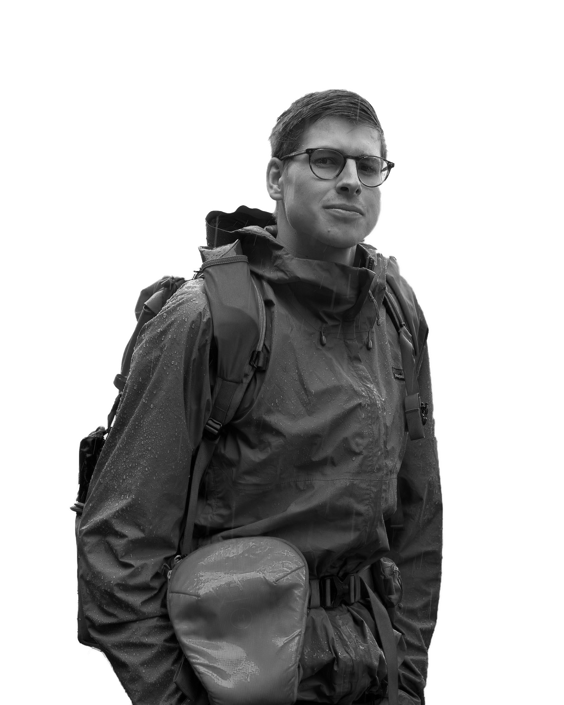

About Sam.
My inspiration to pursue photography is deeply rooted in my innate desire to create and illuminate the world around me. Since childhood, I've been a perpetual dreamer, constantly pondering and fantasizing about the impact I could make. The images and films I produce serve as a tangible reflection of that impact, allowing me to chronicle my journey and revisit the paths I've traversed. Specializing in landscape and portrait photography within adventurous settings, I've discovered that my most captivating images materialize when surrounded by both remarkable individuals and unique environments. This combination fuels my creative spirit, resulting in evocative and powerful captures. Describing my photography style as akin to a personal journal, my stills serve as an embodiment of emotions and narratives. Each photograph tells a story, providing a glimpse into my world and the experiences that have shaped me. What sets my work apart is a deliberate choice to gravitate towards subjects and scenes that defy convention. I am drawn to the uncommon and the extraordinary, deliberately crafting stills that stand out. This intentional uniqueness reflects my creative vision and allows me to showcase my distinct perspective on the world. Guided by the principle of using the photographic process to unite the people in my life, I believe in the profound ability of images to connect individuals. My values emphasize the importance of genuine connections, both with my subjects and the audience, fostering a shared appreciation for the beauty and diversity of the world we inhabit. Through my lens, I invite you to join me on a visual journey that transcends the ordinary, capturing the essence of unique moments and forging connections that bridge the gaps between us. Thank you for being a part of this exploration into the boundless realm of storytelling through photography.